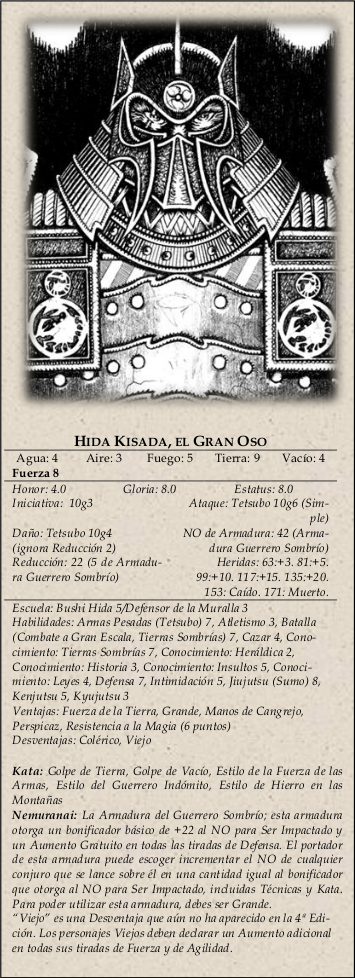

|  |
Hida Kisada (Gloria 9.0, Estatus 8.0):El Gran Oso. Daimio de la familia Hida. Daimio y Campeón del clan del Cangrejo.
Comenzó a matar cuando tenía cinco años de edad, y no ha parado desde entonces. Nadie, ni hombre ni oni, le ha herido y ha
sobrevivido. Cuando se enfada es más parecido a una tormenta que a algo a lo que un jugador o ni tan siquiera un oni sea
capaz de detener. Aparte de sus habilidades en combate, sabe prácticamente todo lo que hay que saber acerca de las Tierras
Sombrías y el NO básico para convencerle de cualquier cosa es de 25. Los personajes sólo podrán verle los ojos; el resto
de su persona permanece oculto en una montaña de metal a la que se conoce como la Armadura del Guerrero Sombrío. Este
año, ninguno de sus hijos está presente.
Kisada es Colérico y no puede permitirse ningún tipo de desobediencia. Su castillo hace de ancla para toda la muralla Kaiu.
Si cae, no habrá ni refuerzos ni segundas oportunidades; las Tierras Sombrías atravesarán la Muralla y nadie en Rokugán
estará seguro nunca más. Si algún samurái le replica a Kisada, lo sentará sobre su regazo y lo azotará como si fuera un niño.
Esta completa humillación probablemente cause algunas Heridas y la pérdida de un rango completo de Gloria y de Honor.
Las ofensas serias tienen como castigo una muerte rápida.
Según Kisada, siempre hay alguien responsable de cualquier fracaso. Si una mujer de noble cuna acaba mutilada, la culpa es
de su yojimbo por no haberla protegido; si fue un maho tsukai, la culpa es de los inquisidores Fénix por no haberlo
detectado antes. Kisada conoce de sobra cuales la causa principal de muerte en la muralla: el relajar la vigilancia.
|